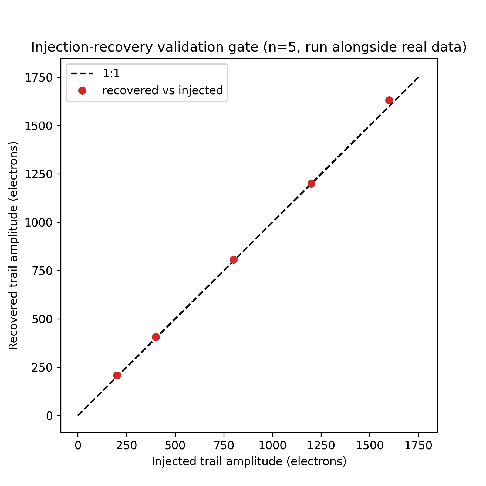
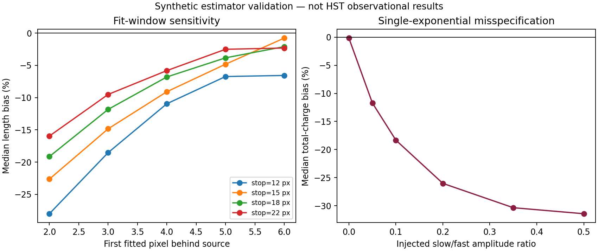

Project observational pair audit
SHA-256, LF-normalised text
f97212f1252ca309e6f9487d42843c855304e764237354b7436707cdab1134eaBrowse 16 versioned evidence files. Table previews simply display stored rows. Consult the project report for the source, processing steps, and inference assumptions.


f97212f1252ca309e6f9487d42843c855304e764237354b7436707cdab1134ea940ca1e75742c524a37c8422020a9e98cc5ad4830acbc85e28e096a9676a442bf46e8906f5ecf385f5bd7f267eeaa5c849bf33ec567ab83fc8f1b0d780eba37c| product_id | source | source_url | retrieved_utc | sha256 | file_size_bytes | selection_reason |
|---|---|---|---|---|---|---|
| jfnx01mhq_flc | MAST/HST | https://mast.stsci.edu/api/v0.1/Download/file?uri=mast:HST/product/jfnx01mhq_flc.fits | 2026-09-25T00:01:00Z | 760f3bb266121e3cfe3d4ac31adf8f40b3cc5d2201e214e618595c87a92e6ea1 | 168439680 | deterministic first-3 public ACS/WFC F606W FLT/FLC exposure sample from proposal 18004, sorted by obs_id; CALACS 10.4.1 archive... |
| jfnx01mhq_flt | MAST/HST | https://mast.stsci.edu/api/v0.1/Download/file?uri=mast:HST/product/jfnx01mhq_flt.fits | 2026-09-25T00:01:00Z | e1e7598c4d3ffd93ed47dbe3c133f7e133a63feb0c68547b00a6bddc533f052c | 168431040 | deterministic first-3 public ACS/WFC F606W FLT/FLC exposure sample from proposal 18004, sorted by obs_id; CALACS 10.4.1 archive... |
| jfnx01miq_flc | MAST/HST | https://mast.stsci.edu/api/v0.1/Download/file?uri=mast:HST/product/jfnx01miq_flc.fits | 2026-09-25T00:01:00Z | 013fb6770c8bc989442fefe4aa8862324e9625061eee9e288435b1519d552eb1 | 168439680 | deterministic first-3 public ACS/WFC F606W FLT/FLC exposure sample from proposal 18004, sorted by obs_id; CALACS 10.4.1 archive... |
| jfnx01miq_flt | MAST/HST | https://mast.stsci.edu/api/v0.1/Download/file?uri=mast:HST/product/jfnx01miq_flt.fits | 2026-09-25T00:01:00Z | f233e0b4f88948690ca70af2b406f1d45620b0321aba5ececb8e6982c9934ef4 | 168431040 | deterministic first-3 public ACS/WFC F606W FLT/FLC exposure sample from proposal 18004, sorted by obs_id; CALACS 10.4.1 archive... |
55ceb3899cfa11fb29984715edd2dabc40ee0cc9be90d8dc88c73e475e75b9848fd6ba64e9345941248c06f3f761a2d880863ff596393b5be417e4eaa944615c| x | value | uncertainty |
|---|---|---|
| 0 | 0.10 | 0.02 |
| 1 | 0.18 | 0.03 |
| 2 | 0.14 | 0.02 |
| 3 | 0.24 | 0.04 |
2231cd2f44a7854fefcb8da60f527333a903c9c7a75fbd9154fdde13de699305e52ee386e2fc8e83627d0e9b72eb6ef5ba15b457e248c63ff5fdc01999ca1db9dce6a30db35c82a67e56f94b9f85d992ee8b77d6b23f8a79d5cb54b7cc6ac99b5c9839d8e42ef432d07867523a55b3771c8c3f30b2da04257d2a68c4e1c73be1| start_pixel | stop_pixel | median_amplitude_bias_fraction | median_length_bias_fraction |
|---|---|---|---|
| 2 | 12 | 0.1996871104259526 | -0.28002279137826025 |
| 2 | 15 | 0.19501483352010118 | -0.22634228018025843 |
| 2 | 18 | 0.18862126226620413 | -0.19139350384799134 |
| 2 | 22 | 0.18005642197746866 | -0.1595421648109776 |
651978090cb2773bf42049cc3029a546496e6b83110d21419f0187834691073194010d40cf41104fdf4b542d33c790ee2926500a51ee9b5a3f7ad3c453bf5897f54e7493cd57ac51bc9355f8a0872a6bfed08f773bfeba3dcc1772aab387f5ea7ea6082ac7ee28aa9315911c35cbf2ece1bb64838cfe253b0d9f27b3a494c75c25dad6a8f896acef5599d2e850b66e7905ae7ba9fe69172d09d47c3c3ed0f4c86e104c3cdba1becfbf60a54e0703f2bdf3517d73746068d6e54045eff768025321fb8a61538eb11150240d2c7a467f111d00593221bca073edc9939ac4d5313bSHA-256 values verify the stored files. They do not independently validate the scientific analysis. Rebuild this page with python scripts/evidence_catalog.py followed by python scripts/render_evidence_page.py.